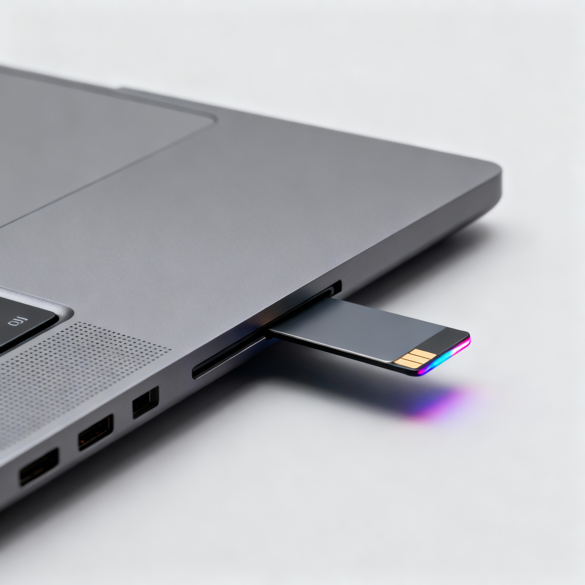

"Smart Access Card Laptop: The Future of Seamless Power-On Technology"

Imagine a laptop that doesn’t need a traditional power button. Instead, you simply insert a small access card into a dedicated slot at the bottom of the device. The moment the card slides in, it automatically triggers an internal sensor, instantly powering on the laptop — no manual button press required. When you’re done using it, just push the card slightly inward again — the system detects the action, powers down the laptop smoothly, and ejects the card automatically. To make it even more futuristic, the card could feature a tiny RGB light on its front side that glows when inserted, signaling activation. This concept not only enhances the user experience but also gives the laptop a premium, next-gen feel — merging aesthetics with functionality in a truly modern way.